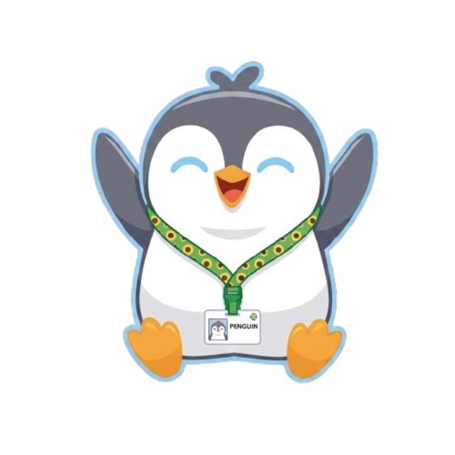

♡
Acolhimento
Um espaço onde diferentes experiências podem ser compartilhadas com respeito.
O Penguinismo é um espaço digital criado para promover acolhimento, interação, informação e conexão entre pessoas autistas, familiares e pessoas da rede de apoio.

O Penguinismo nasceu com o propósito de criar um espaço digital mais acolhedor, acessível e seguro para pessoas neurodivergentes. A plataforma busca unir interação, entretenimento, informação e suporte, permitindo que usuários encontrem comunidades, compartilhem interesses, experiências e conhecimentos. Além disso, o projeto valoriza a acessibilidade e a segurança digital, utilizando recursos de moderação para tornar as interações mais respeitosas e inclusivas.
Um espaço pensado para diferentes formas de interação e comunicação.
Comunidades para aproximar pessoas com interesses em comum.
Recursos de moderação para incentivar interações mais respeitosas.
Uma experiência digital pensada para diferentes necessidades.
O Penguinismo nasceu da ideia de criar um ambiente digital mais acolhedor, acessível e respeitoso.
Um espaço onde diferentes experiências podem ser compartilhadas com respeito.
Conecte-se com pessoas e encontre novas possibilidades de interação.
Conteúdos e informações pensados para ajudar a comunidade e sua rede de apoio.
Queremos construir uma comunidade em que cada pessoa possa encontrar informação, interação e acolhimento.
Entrar na comunidadeUm espaço acolhedor começa quando cada pessoa é respeitada.
— PenguinismoO Penguinismo está sendo construído para criar novas formas de conexão, informação e acolhimento.